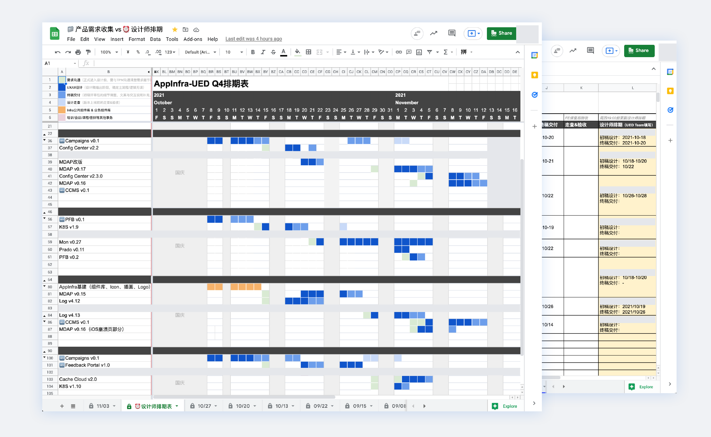

01 / 工具后面是判断
排期表只是工具
2021 年的收需和排期记录里，我们约定每周三由合作方提交版本目标、PRDProduct Requirements Document，产品需求文档：记录版本目标、功能范围与验收标准，是设计排期的输入。 与预期节点，周四反馈设计排期。说到底，排期表只是工具：真正在做的是三件事——判断需求的体量，判断成员的能力，判断谁还有余力。排不上期的需求，再单独沟通调整。
日历里放入了需求沟通、设计、终稿交付、走查把方案或交付物完整走一遍，核对是否与预期一致，问题修正后回到相同分支复验。和公共建设。只计算画页面的时间，很难判断一个人是否还有余力；一项工作交稿以后，后面的沟通和实现核对也还没有结束。
从统一收需到可执行的排期
定期收需
集中查看版本目标、PRD 与预期节点，明确反馈时间。
2021 Q3 汇报 · 第 78 页「定期收需」 · 截图节选

协调排期
将沟通、设计、交付、走查和公共建设放进同一日历。
2021 Q3 汇报 · 第 80 页「排期」 · 截图节选

从跨角色协作到交付跟踪
分阶段协作
按 Define、Propose、Develop、Rollout 阶段对齐参与角色与会议。
2021 Q3 汇报 · 第 81 页协作记录 · 截图节选

持续跟进交付
对照评审、设计开始、终稿交付与走查节点，记录当前状态。
2021 Q3 汇报 · 第 82 页项目跟踪 · 截图节选

这套安排的真正作用，是让每件事都有人跟进到底：什么时候开始、现在等谁、交付以后有没有走查。跟进到底不是催进度，而是让问题在变成结果之前被看见。
02 / 边界说清，风险才可见
有空的人不一定最适合接手
当时采用固定主责与公共人力池结合的方式：成员有主要负责的产品线，也支持其他需求，以应对需求高峰。临时支援要付出成本——除了有没有时间，还要看熟不熟悉业务，切换后会不会打断原有工作。
接任务也不是越多越好。说得清「我能做到哪一步、哪一步需要支持」的人，风险是可见的；说不清边界的人，会把风险藏在自己手里，直到扛不住才暴露。
我会把产品地图、设计依据和 InfraDInfra Design System 的简称：企业级基础设施设计系统，由设计与前端共同建设维护。 指南作为进入业务的起点，再通过共建模块和方案评审讨论具体取舍。项目设计师负责自己的方案和推进，专业支持要帮助他逐步形成独立判断。
03 / 接得住才算完
交接以后还要有人接住问题
2022 年团队划入 Infra，专职 Design Manager 同期到岗，我卸下管理职能、转为分组 PIC。早期以虚线 Leader虚线带队：实际承担团队负责人职责（需求、排期、评审、交付），但正式组织架构中没有对应的管理职级。身份做的需求、人力与交付协调，并不包含全部正式人事权限；角色改变时，资源怎样协调、哪些决定由谁作出，都需要重新说清楚。
把一个产品交给下一位设计师，我习惯留下三样东西：方案依据、业务限制和未决问题。接手的人知道哪些事情可以自行决定，哪些需要找谁协同，工作才有机会持续推进。
协作里我最担心的一种状态，是成员闷头推进，交付前才暴露问题。机制要防的正是这种信息孤岛：风险在周会前更新进项目表，卡点能被共同讨论，一个人扛不住的事才有机会变成大家接得住的事。
相关文件涉及企业内部信息，可在面试交流中结合脱敏处理后的材料展开介绍。